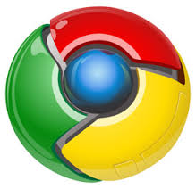

This isn't how I code, it's who I am!
Hi there, I'm James.
I came to Michigan State University as a Computer Science major.
My passion is for programming and I hope to make something of myself
in the world of software developement I work on campus as a web
developer, coding in PHP and creating a lot of the functionality
that drives some of the natural science college's web sites.
This summer I'm an intern working in software developement,
it's my first time working with Java but I'm already
learning a lot.
The hardware behind me
I was in Computer Science, It's not surprising to find myself
surrounded by a multitude of technological devices. As I write this,
I have a brand new 13" Macbook Air on my lap, a Android Galaxy S4
that's seen better days, and a 17" Toshiba Satelite dropping the
bass as I code.
I take pride in having a machine with every system on it,
Windows, OSX, and Linux.
For web design, I sketch Idea's on paper or on my Galaxy Note,
then write the code on my Mac, and test it in browsers on both my
mac and Windows because each have different browsers installed.
However Chrome is my favorite.
and the Software on it


I already mentioned doing my web design on my Macbook Pro,
Let me share what programs I use.
I chose to use Sublime Text 2 to edit my HTML code because
I've used it in my CSE classes to code other projects. Sublime
comes with many features, two of my favorites are auto complete
and the hightlighting. The auto complete will finish common
tags or functions based on the programming language you're using.
I like the highlighter because it's also language specific, in
HTML every tag is colored and text isn't.
I like google products because I have used Gmail and other
apps for years, now chrome brings it all together. Google
has done an amazing job creating this browser. No offense to
the other browsers (except IE), I am just acustomed to Chrome.
When I first got my mac, I immediately jumped into terminal,
I set up all my custom directories and used terminal for my CSE
projects. Did you know you can SSH into other servers and modify
the data on it like you're using Notepad, all from your terminal?
I'll be using git commands directly from terminal, I customised
the output of terminal so it looks a lot better than the default program.